Изобретение и конструкция космических аппаратов
Возможно, Ньютон и продумывал запуск спутника, но прежде чем мы на самом деле совершили этот подвиг, прошло немало времени. Одним из первых визионеров был писатель-фантаст Артур Кларк. В 1945 году Кларк предположил, что спутник может быть размещен на орбите так, что будет двигаться в том же направлении и с той же скоростью, что и Земля. Так называемые геостационарные спутники можно было бы использовать для связи.Ученые не понимали Кларка — до 4 октября 1957 года. Тогда Советский Союз запустил «Спутник-1», первый искусственный спутник, на орбиту Земли. «Спутник» был 58 сантиметров в диаметре, весил 83 килограмма и был выполнен в форме шарика, внутри спутника находился газообразный азот, под давлением. Хотя это было замечательное достижение, содержание «Спутника» было скудным по сегодняшним меркам:
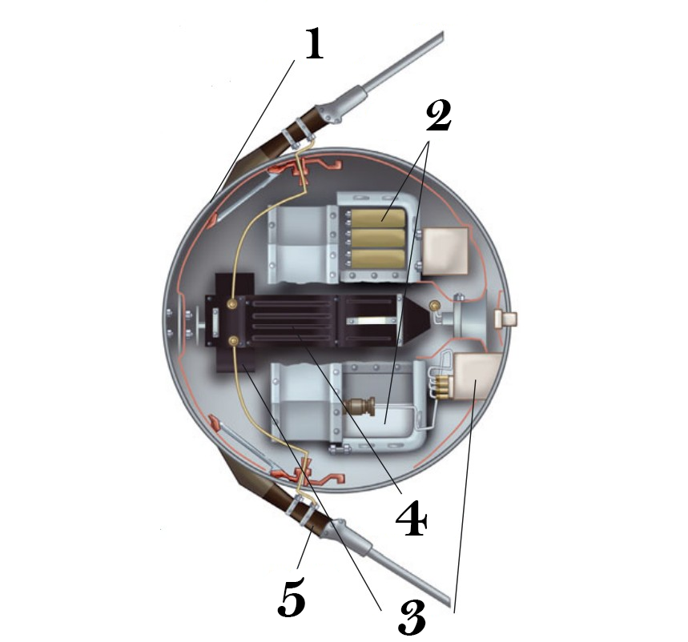
×

Устройство Спутник-1
- Металлический корпус (шар из двух полусфер)
- аккумуляторная батарея
- Система терморегулирования
- Радиопередатчик
- Антенны
На внешней стороне «Спутника» четыре штыревые антенны передавали на коротковолновой частоте выше и ниже нынешнего стандарта (27 МГц). Станции слежения на Земле поймали радиосигнал и подтвердили, что крошечный спутник пережил запуск и успешно вышел на курс вокруг нашей планеты. Месяцем позже Советский Союз запустил на орбиту «Спутник-2». Внутри капсулы была собака Лайка.
В декабре 1957 года, отчаянно пытаясь идти в ногу со своими противниками по холодной войне, американские ученые попытались вывести спутник на орбиту вместе с планетой Vanguard. К сожалению, ракета разбилась и сгорела еще на стадии взлета. Вскоре после этого, 31 января 1958 года, США повторили успех СССР, приняв план Вернера фон Брауна, который заключался в выводе спутника

×

Гарольд Розеном
Воодушевленные этими успехами, некоторые компании начали разрабатывать и запускать спутники в 60-х годах. Одной из них была Hughes Aircraft вместе со звездным инженером Гарольдом Розеном. Розен возглавил команду, которая воплотила идею Кларка — спутник связи, размещенный на орбите Земли таким образом, что мог отражать радиоволны из одного места в другое. В 1961 году NASA заключило контракт с Hughes, чтобы построить серию спутников Syncom (синхронная связь). В июле 1963 года Розен и его коллеги увидели, как Syncom-2 взлетел в космос и вышел на грубую геосинхронную орбиту. Президент Кеннеди использовал новую систему, чтобы поговорить с премьер-министром Нигерии в Африке. Вскоре взлетел и Syncom-3, который на самом деле мог транслировать телевизионный сигнал.
Эпоха спутников началась.
Современные спутники погоды
Конструктивно метеоспутник - контейнер, оснащённый двумя или тремя панелями солнечных батарей. Контейнер разделён на герметичные отсеки. В верхнем - энергокомплекс, позволяющий его системам наблюдения подпитываться от солнца. В нижнем находится оборудование для научных наблюдений.Спутник выводится на орбиту с помощью ракеты - носителя. При выходе на заданную орбиту он отделяется от ракеты, и специальный электроприводной механизм раскрывает его батареи.
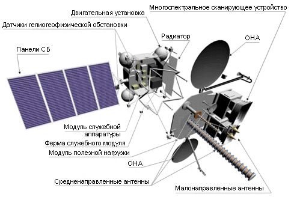
Информационная аппаратура на спутниках:
×

Схематическое устройство метеорологического спутника 'Электро-Л № 2'
- Оптические приборы КМСС, МСУ-МР, работающие в различных диапазонах;
- СВЧ - радиометры;
- Инфракрасный Фурье-спектрометр, выполняющий зондирование по температурным и влажностным параметрам;
- ГАК-М - приборный комплекс, позволяющий анализировать большой спектр излучений.
- Радиолокационная аппаратура для получения изображений независимо от погоды;
- Радиотехнический комплекс, собирающий и передающий сведения, в том числе и с наземных точек измерения.
Задачи, которые сегодня решают метеорологические спутниковые комплексы:
- наблюдение за поверхностью и подстилающим слоем;
- мониторинг состояния среды в целом;
- мониторинг ЧС. Можно оперативно отслеживать ЧС не только природного, но и техногенного характера;
- сбор и передача данных с ПСД (наземных, ледовых или дрейфующих).
Современные спутники производят на специальных фабриках
Железногорск (он же — Красноярск-26) — закрытое территориальное образование на правом берегу Енисея, в котором раньше помимо спутников производили оружейный плутоний. В последние годы «Информационно-спутниковые системы» стали крупнейшим нанимателем в городе.
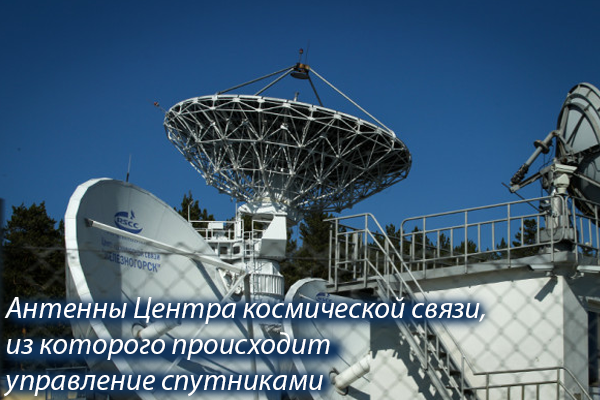
×

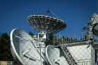
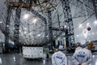
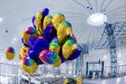
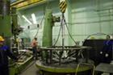
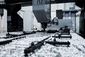
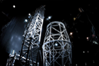
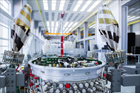
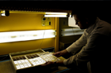